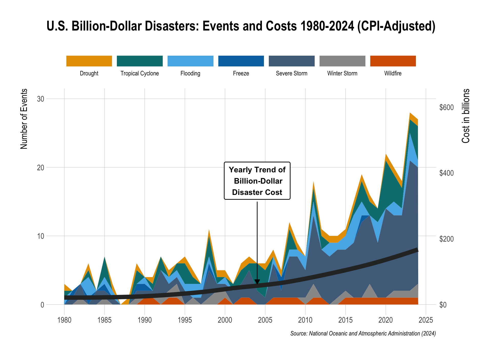

library(tidyverse)
oj <- read_csv("http://bcdanl.github.io/data/dominick_oj_na.csv")
ggplot(data = oj,
mapping = aes(x = price, y = sales,
color = brand)) +
geom_point(alpha = .3) +
geom_smooth(method = "lm") +
labs(title = "Scatter Plot of Sales vs. Price",
x = "Price",
y = "Sales")Homework 5
Generative AI for Data Analysis
- Please answer all of the following questions thoroughly.
- Prepare your answers in a Word document and submit the document to Brightspace.
- For Homework Assignment 5, using a generative artificial intelligence (AI) tool is required.
- Choose one generative AI tool of your preference.
- Copy your full conversation with the AI tool and paste it into your Word document.
- You may submit multiple times, but only your most recent submission will be graded.
- The assignment is due on Tuesday, December 9, 2024, at 11:59 PM (Eastern Time).
Question 1. Choice of Generative AI Tool
What generative AI tool have you used for this homework assignment?
Question 2. Python Visualization with the seaborn Library
seaborn
seabornis a Python data visualization library that provides a high-level, elegant interface for creating informative and attractive graphics.- You can think of it as the Python counterpart to R’s
ggplot2: it emphasizes clear defaults, aesthetic color palettes, and concise syntax for complex visualizations.
- Because of its intuitive design and visually appealing output, I recommend using
seabornas the default choice for visualization in Python.
- You can think of it as the Python counterpart to R’s
- Provide your conversation with generative AI to do the following tasks:
- Translate the following R
ggplotcode into Pythonseaborncode to generate a scatter plot showing the relationship between “sales” and “price” using the CSV file,http://bcdanl.github.io/data/dominick_oj_na.csv. - Make a step-by-step comparison between the Python code and the R code to understand how each part corresponds to the other.
- Translate the following R
Question 3. Python Data Analysis with the pandas Library
pandas
pandasis Python’s primary library for data manipulation and analysis, offering powerful tools for working with tabular data.- You can think of it as the Python counterpart to R’s
dplyr(tidyverse): it provides clear, expressive functions for filtering, transforming, summarizing, and reshaping data.
- You can think of it as the Python counterpart to R’s
- Because of its intuitive syntax and flexible data structures — DataFrame (similar to a data.frame in R) and Series (similar to a vector in R) —
pandasis the default foundation for most data analysis workflows in Python.
Provide your conversation with a generative AI tool to complete the following tasks:
Translate the R
dplyrcode below into equivalent Python code usingpandasto perform the same data-manipulation steps on the CSV file
http://bcdanl.github.io/data/dominick_oj_na.csv.Make a step-by-step comparison between the Python code and the R code, explaining how each part of the
dplyrpipeline corresponds to the equivalent operation inpandas.
library(tidyverse)
oj <- read_csv("http://bcdanl.github.io/data/dominick_oj_na.csv")
oj |>
select(brand, price, sales) |>
filter(price > 1.5) |>
mutate(log_sales = log(sales)) |>
arrange(desc(price))Question 4. Debugging R Code with Generative AI
- Provide your conversation with generative AI to debug the following code:
- Explain to the generative AI the error message you received when running the code below:
oj |>
counting(brand, ad_status)Question 5. Data Transformation with Generative AI Assistance
- Provide your conversation with generative AI for adding a new variable,
revenue, to theojdata frame.- The
revenuevariable should be computed as the product ofsalesandpriceto provide information about the weekly revenue for each orange juice brand.
- The
library(tidyverse)
oj <- read_csv("http://bcdanl.github.io/data/dominick_oj_na.csv")Question 6. Understanding R ggplot and dplyr Code with Generative AI
- Provide your conversation with a generative AI tool to complete the following task:
- In the code below, add a comment (
#) with a brief explanation for each line of the R code below to show your understanding of what the code is doing.
- In the code below, add a comment (
library(tidyverse)
library(hrbrthemes)
library(ggthemes)
library(grid)
library(scales)
events_raw <- read_csv("https://bcdanl.github.io/data/time-series-US-cost-1980-2024.csv",
comment = "#") |>
select(-matches("upper|lower", ignore.case = TRUE))
events_counts <- events_raw |>
select(Year, matches("Count$"))
events_long <- events_counts |>
pivot_longer(
cols = -Year,
names_to = "hazard",
values_to = "count"
) |>
mutate(
hazard = str_remove(hazard, " Count$"),
hazard = factor(
hazard,
levels = c(
"Drought",
"Tropical Cyclone",
"Flooding",
"Freeze",
"Severe Storm",
"Winter Storm",
"Wildfire"
)
)
) |>
filter(!is.na(hazard))
cost_df <- events_raw |>
select(Year, matches("All Disasters.*Cost", ignore.case = TRUE)) |>
rename(cost_billion = 2)
plot_df <- events_long |>
left_join(cost_df, by = "Year")
max_count <- max(plot_df$count, na.rm = TRUE)
max_cost <- max(plot_df$cost_billion, na.rm = TRUE)
cost_scale <- max_count / max_cost
hazard_cols <- c(
"Drought" = "#E69F00", # orange
"Tropical Cyclone" = "#007F7F", # green
"Flooding" = "#56B4E9", # light blue
"Freeze" = "#0072B2", # dark blue
"Severe Storm" = "#4F6D8A", # purple
"Winter Storm" = "#999999", # gray
"Wildfire" = "#D55E00" # red
)
ggplot(plot_df, aes(x = Year)) +
geom_area(
aes(y = count, fill = hazard),
position = "stack",
color = NA
) +
geom_smooth(
aes(y = cost_billion * cost_scale),
linewidth = 3,
color = "#2c2e2f",
se = FALSE
) +
geom_label(
data = tibble(
Year = 2004,
y = max_count * 0.95,
lab = "Yearly Trend of\n Billion-Dollar\nDisaster Cost"
),
aes(x = Year, y = y, label = lab),
inherit.aes = FALSE,
hjust = 0.5,
vjust = 0.5,
size = 4,
fontface = "bold",
label.size = .5,
label.r = unit(0.15, "lines"),
label.padding = unit(0.5, "lines")
) +
annotate(
"segment",
x = 2004,
xend = 2004,
y = 15,
yend = 3,
color = "black",
linewidth = 0.5,
arrow = arrow(length = unit(0.25, "cm"), type = "closed")
) +
scale_fill_manual(
values = hazard_cols,
name = ""
) +
scale_y_continuous(
name = "Number of Events",
breaks = seq(0,30,10),
limits = c(0,30),
sec.axis = sec_axis(
~ . / cost_scale,
name = "Cost in billions",
labels = label_dollar(prefix = "$")
)
) +
scale_x_continuous(
breaks = seq(1980,2025,5)
) +
labs(
x = NULL,
fill = "",
title = "U.S. Billion-Dollar Disasters: Events and Costs 1980-2024 (CPI-Adjusted)",
caption = "Source: National Oceanic and Atmospheric Administration (2024)"
) +
theme_ipsum() +
theme(
plot.title = element_text(hjust = 0.5,
size = rel(1.75)),
panel.grid.minor = element_blank(),
axis.title.y = element_text(size = rel(1.5),
margin = margin(0,12,0,0)),
axis.title.y.right = element_text(size = rel(1.12),
margin = margin(0,0,0,12)),
legend.position = "top",
legend.box = "horizontal",
legend.direction = "horizontal"
) +
guides(
fill = guide_legend(
title.position = "top",
label.position = "bottom",
keywidth = unit(4.75, "lines"),
nrow = 1
)
)
References
- Billion-Dollar Weather and Climate Disasters, National Oceanic and Atmospheric Administration (2025)